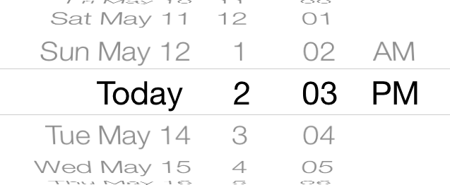

You're at South Station trying to get to Harvard University. Click the location icon to get started!
WhereTo can search for more than just subway stations. Type "Harvard" and press enter.
Hey look, Harvard University!
This is WhereTo's suggestion for the best route. You can click on the arrows to see alternative routes or scroll down to see more information.
Oops. I haven't really had a chance to think through the walking maps part of the UI yet!
WhereTo?
Click this screen to start the demo
Options

Leave at
| Arrive by
Harvard Square
Subway Station
Harvard Avenue
Subway Station
Harvard University
Massachusetts Ave, Cambridge, MA
Harvard Bookstore
JFK St, Cambridge, MA
<
>
Board
2:07 pm
18 min (5 min walking)
Comes again in 4 min
Arrive
2:25 pm
▼
Walk to South Station
2:06pm
Red Line Train (Alewife)
2:07pm
Harvard Square Station
Walk to Harvard University
2:21pm
Arrive
2:25pm
Board
2:20 pm
47 min (9 min walking)
Comes again in 21 min
Arrive
2:59 pm
▼
Walk to Pearl St @ Congress St
2:12 pm
#92 Bus (Assembly Square)
2:20pm
Cambridge St @ Maffa Way
2:37 pm
#86 Bus (Cleveland Circle)
2:46 pm
Kirkland St @ Kirkland Pl
2:58 pm
Walk to Harvard University
Arrive
2:59 pm
If you're experiencing any bugs in the demo, refresh the page and try again. If the problems persist, contact me.